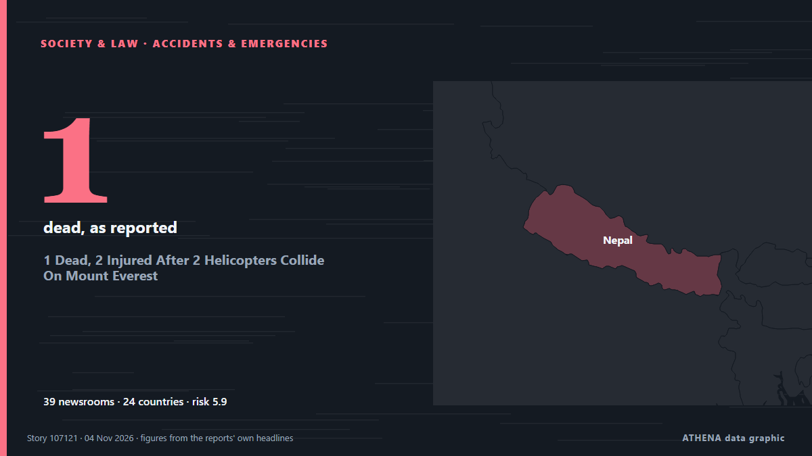

Asie du Sud
Asie du Sud : les derniers événements pays par pays, avec risque, sources et pays selon ATHENA.

Accidents et urgences1 Dead, 2 Injured After 2 Helicopters Collide On Mount Everest
Two helicopters collided near Mount Everest during Nepal's peak trekking season, killing an Indian tourist and injuring passengers and pilots. de Simple Flying
Inside Tehran talks: Iranians link Houthi de-escalation to US approval of regional truce
A day after Saudi Arabia and its two defence-pact partners sent senior officials to Tehran, sources say the clearest outcome is a promise to keep talking, not a deal to de-escalate on any front… de The National
Indian Navy Rescues 20 Crew Members From Hijacked Iranian Vessel off Somalia
Airborne commandos recapture fishing boat seized by pirates as attacks off the Somali coast rise to their highest level since 2013. de Kurdistan24 (English)
Bangladesh raises minimum wage for garment workers after weeks of protests
A government-formed wage board in Bangladesh has raised the minimum monthly wage for entry-level garment workers by 36% to 17,000 takas, or $136, from 12,500 takas after weeks of violent protests. de ABC News (International)
Trump praises Albanese as Quad unveils defence and minerals deals
With major talks in China approaching, US President Donald Trump, Anthony Albanese and their fellow Quad leaders deepen cooperation on defence and technology at a summit in Manila. de ABC News Australia
China's Shenzhou-24 spaceship docks with Tiangong space station
China to launch Shenzhou-24 crewed spacecraft on November 25. de CGTN (China)
Top officials from Mecca pact countries to meet Iranian officials in Tehran on Monday, two sources say
Top officials from the Makkah Pact countries Saudi Arabia, Turkiye and Pakistan are set to meet Iranian officials in Tehran on Monday to discuss regional coordination, two people with knowledge… de Business Recorder